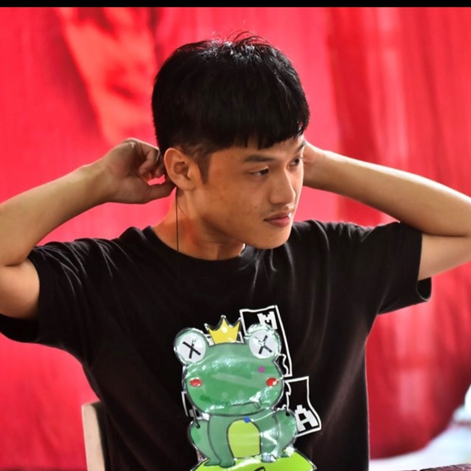

張仲均
CYIM
生日:89/03/09
系所:中原大學資訊管理學系
電話:0963876366
e-mail:jerrychang890309@gmail.com
I'm still same 都好像沒有變


My Skills
HTML
70%
CSS
75%
JavaScript
65%
PHP
60%
Experience
大一下學期
管理學這堂課程，我們去幫助了中原幼兒園 幫助大班的小朋友整理教室，陪他們一起玩 還有協助他們的運動會，讓這些過程可以順利地舉行 。
大二上學期
第一次接觸到關於前端網頁設計的領域 ，除了要在課堂聽懂老師說的，也必須利用課餘的時間 去好好的收集知識，期中的專案關於國際學生證和創發中心。
大二上學期
到了大二沒有在宿舍生活了，要到學校的附近找房子租 所以生活的開銷比以前大，所以才想要去找一份打工，讓自己可以 有額外的金錢，因為爸媽給的金額是有限的，在這幾個月學習到很多 上課學不到的事情，體會到餐飲業的辛苦。
社團經驗
中原資管系學會

#資管之夜
在這個系學會裡，一開始都是抱著去玩玩的心態，覺得辦個活動有甚麼好困難的，但是卻不是我想像的那樣。在系學會裡面有不同的分工，每個人都扮演者很重要的角色，每個組別都會要好好的去做溝通，才會使的這些活動辦得精采。 可能會有人會覺得我們浪費時間，不好好讀書，但是我覺得可以先學會團隊合作，以後畢業到了職場去上班，也是會需要團隊合作，每個活動都是大家一起盡心盡力討論出來了，雖然過程中分非常的辛苦，但是我覺得會成為大學很棒的回憶。
系籃

#2019 OB賽
高中的時候，就有聽說過大學時都會有系隊，我自己從小時候 就很喜歡打籃球，也一直對籃球隊很有期望，所以剛上大一就直接選擇去 加入了系籃，一開始體力完全不行，在球場上跑沒有幾次就快要喘不過氣了， 還有上了大學都是在打5打5的比賽，和以前國高中的時候3打3完全不同，要一直打 戰術，這也讓我知道，籃球並不是一個人在打的，是需要場上的五個人還有在場下的隊友們 以及學長們，一起不斷的努力，才會贏的勝利。
宿營

#迎新宿營
宿營是我加入系學會的第一個大型的活動，我參加的是活動股，宿營這個活動真的 是非常的辛苦，每天早上9.00就要準時到達集合的地方，準備開始要學活動所要跳的舞 而且那時時候是暑假，氣溫大概都有30幾度，都跳到衣服都濕透了，然後下午再回來繼續練習 晚上還要開會，雖然聽起來很累，但是我覺得可以去體驗一下，讓別人去玩我們自己設計的遊戲，讓我的大學生活更豐富。
系羽

#系羽北資盃